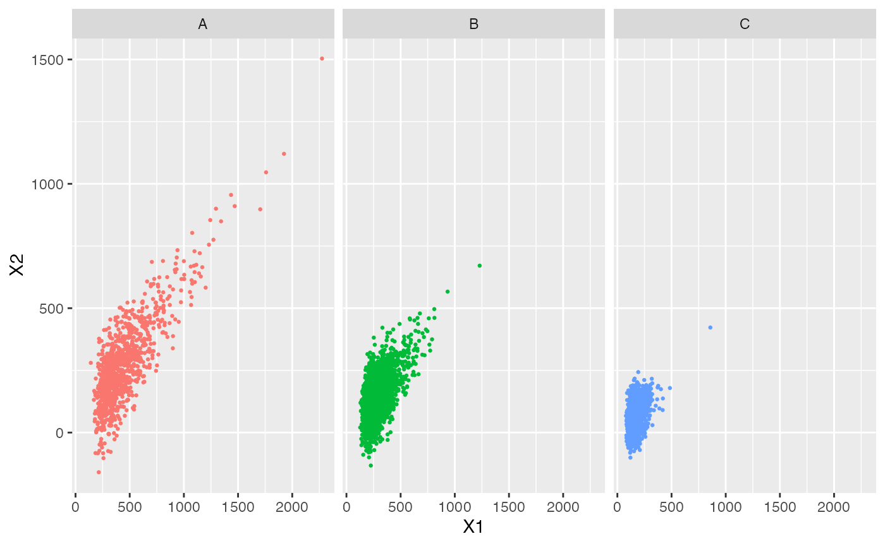
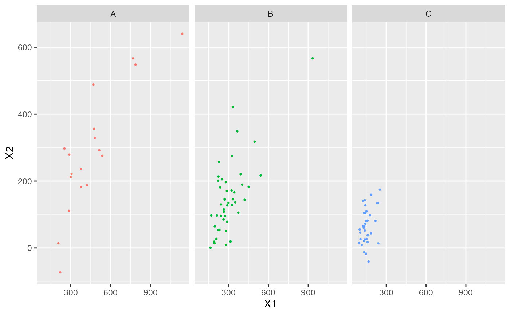

This article will cover a few different ways of synthesizing populations with two numeric variables, and one categorical group variable. First, lets take a look at the data.

In addition to the three groups having somewhat different ranges for both X1 and X2, if we tally by group and look at the correlations between the two variable, we see the groups are quite different as well:
| Group | Amount | Correlation |
|---|---|---|
| A | 1004 | 0.8133460 |
| B | 2213 | 0.6057323 |
| C | 1783 | 0.3823852 |
Of course, we statisticians will not get to observe the entire population. In this case, we will get a random sample of size \(n = 100\) out of a population with \(N = 5000\). Here is that sample.

And here are the tallies and correlations for the observed sample:
| Group | Amount | Correlation |
|---|---|---|
| A | 18 | 0.8503803 |
| B | 47 | 0.7103725 |
| C | 35 | 0.3604239 |
Our goal is to synthesize populations of size \(N = 5000\), hopefully resembling the population, from our observed sample and some assumptions. We can derive the distribution of the population given the sample, using the following:
For a population \(\mathbf{Y}\), sample \(\mathbf{X}\), and parameter set \(\theta\), we can use Bayes’ theorem to get the distribution for \(\mathbf{Y}\), conditioned on our observed sample, \(\mathbf{x}\).
\[\begin{align*} f(\theta, \mathbf{Y} = \mathbf{y}| \mathbf{X} = \mathbf{x}) &= \frac{ f(\mathbf{X} = \mathbf{x} | \theta, \mathbf{Y} = \mathbf{y}) f(\theta, \mathbf{Y} = \mathbf{y}) }{ f(\mathbf{X} = \mathbf{x}) } \\ &\propto f(\mathbf{X} = \mathbf{x} | \theta) f(\mathbf{Y} = \mathbf{y} | \theta) \pi(\theta) \end{align*}\]
We do have to decide on a choice of \(f\), the distribution governing the data. Without knowing any better, one obvious choice would be a mixture of \(Normal\) distributions, in which each group has its own mean and variance. Note we can combine some of what we learned from both the discrete and continuous cases; we will treat the group variable as \(Multivariate Hupergeometric\), so we can use the corresponding theory and prior, and we are treating each group’s \((x_1, x_2)\) pair of variables as coming from a \(Multivariate Normal\) distribution. This can be represented as a hierarchical model,
\[\begin{align*} (x_1, x_2) &\sim \end{align*}\]
Lets write a basic function to create populations following this distribution.